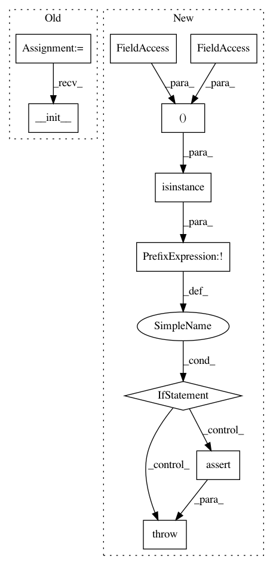

88ff1953e94cfbbcd53f4d659a1099fce8a7344e,tensorlayer/layers/convolution.py,DownSampling2dLayer,__init__,#DownSampling2dLayer#Any#Any#Any#Any#Any#Any#,581
Before Change
align_corners=False,
name="downsample2d_layer",
):
Layer.__init__(self, prev_layer=prev_layer, name=name)
self.inputs = prev_layer.outputs
if len(self.inputs.get_shape()) == 3:
if is_scale:
size_h = size[0] * int(self.inputs.get_shape()[0])
After Change
self.inputs = prev_layer.outputs
if not isinstance(size, (list, tuple)) and len(size) == 2:
raise AssertionError()
if len(self.inputs.get_shape()) == 3:
if is_scale:
size_h = size[0] * int(self.inputs.get_shape()[0])
size_w = size[1] * int(self.inputs.get_shape()[1])
In pattern: SUPERPATTERN
Frequency: 3
Non-data size: 10
Instances
Project Name: tensorlayer/tensorlayer
Commit Name: 88ff1953e94cfbbcd53f4d659a1099fce8a7344e
Time: 2018-04-13
Author: DEKHTIARJonathan@users.noreply.github.com
File Name: tensorlayer/layers/convolution.py
Class Name: DownSampling2dLayer
Method Name: __init__
Project Name: tensorlayer/tensorlayer
Commit Name: 88ff1953e94cfbbcd53f4d659a1099fce8a7344e
Time: 2018-04-13
Author: DEKHTIARJonathan@users.noreply.github.com
File Name: tensorlayer/layers/padding.py
Class Name: ZeroPad1d
Method Name: __init__
Project Name: tensorlayer/tensorlayer
Commit Name: 88ff1953e94cfbbcd53f4d659a1099fce8a7344e
Time: 2018-04-13
Author: DEKHTIARJonathan@users.noreply.github.com
File Name: tensorlayer/layers/convolution.py
Class Name: UpSampling2dLayer
Method Name: __init__